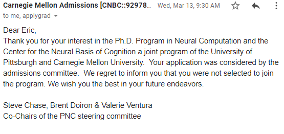
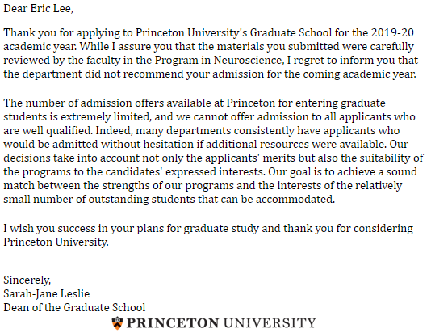
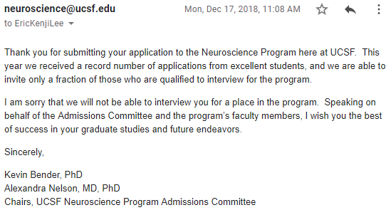
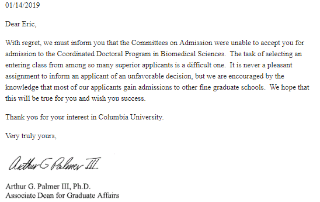
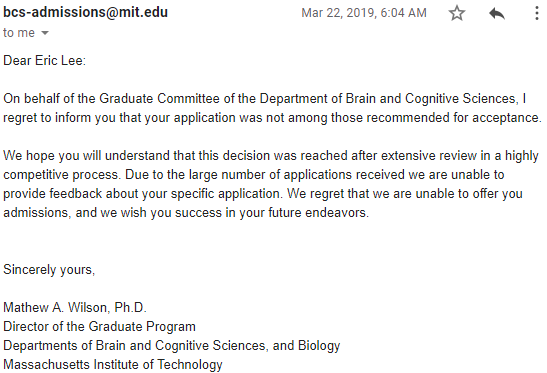
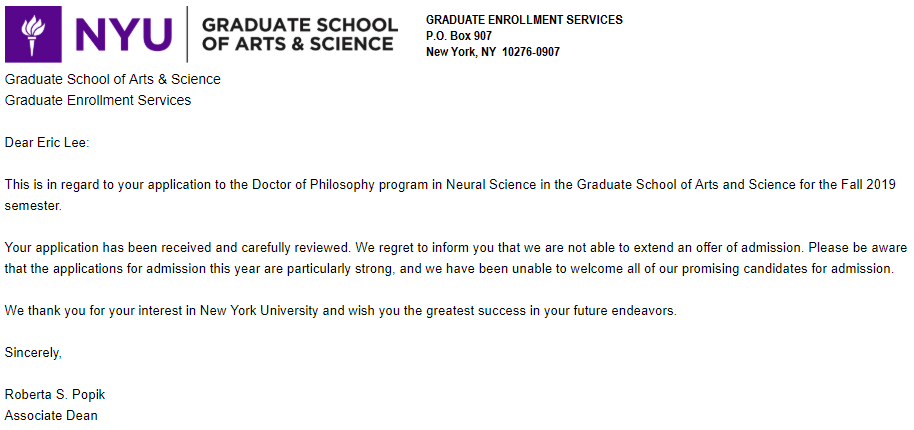
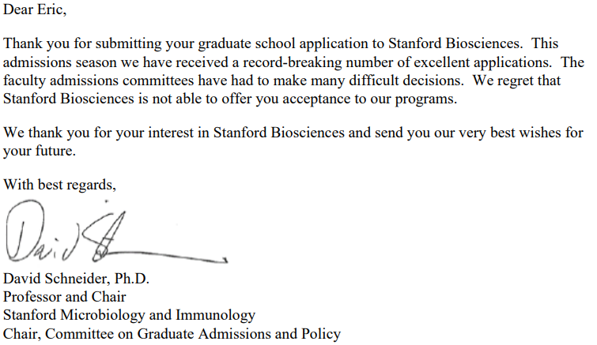
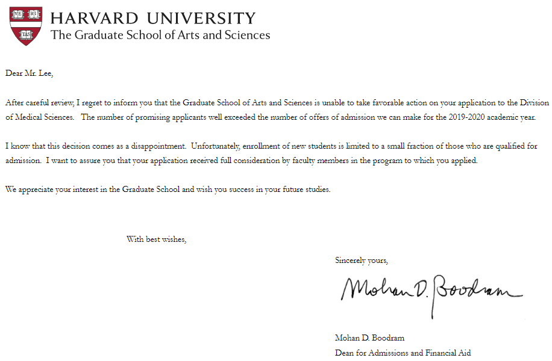

As a follow-up to my first post, I've written this, Part Two: Interviewing for Graduate Schools, as the next in the series; this post will go over my application timeline and experiences interviewing for four different graduate schools. It's an amazing experience that I hope everyone reading this gets to experience. Maybe four isn't a lot (I have friends that interviewed at over ten!) but it's certainly less stressful than interviewing at only one! First off is the application timeline I used.
Pictured above is a view of my hometown of Kaneohe (well, Heʻeia technically). I took it on the way home from my grandmother's house on one of the last days I was back home before heading off to grad school. It wasn't until I went to college did I realize that not everyone's hometown have mountains like this.
The application timeline
Researching schools: May through July
During these months, I did a lot of work reading through the literature and figuring out what clusters of systems/computational neuroscientists existed and where; especially those that looked at latent space inference with ML and worked in the visual cortex of the mouse or prefrontal/motor cortex of the macaque. I did this by looking back over all the journal articles I found most interesting and doing mini literature reviews until certain names started reoccuring in the papers. You should definitely be using a reference manager but personally I used OneNote in conjunction with ReadCube (the recommendations tool is excellent). Here I also began taking notes on what I found most interesting and started refining a rough draft of my personal statement. I also found very helpful to peruse the speakers lists of conferences like CCN or CNS but especially Cosyne; it was of tremendous help to come across a network graph by Adam Calhoun linking PI's by co-authorship on abstracts. This is also doubly useful because graduate students largely adopt the professional network of their PI's and this was a good way of visualizing this. I also created a spreadsheet to start tracking schools which you can feel free to copy!
I had thought originally that I was only going to consider the quality of the science in where I applied but I think through this process of really envisioning where I was going to spend the next year made me prioritize location as well. It's up to you but personally I think I thrive where there are a lot of like-minded people who are, hopefully, smarter than me. The obvious choice then was to apply to all the main schools in Boston!
Networking with PIs: July through November
This is when the whole applying to grad school thing started becoming really real! About this time I had compiled a list of schools and around three PI's for each. My list was the following with an asterisk next to the names of PI's I successfully contacted and corresponded with. I originally planned to contact all of them but it's a surprising amount of work crafting an email for this many people or else trying to arrange a meeting with them at SfN.
- University of Washington: Adrienne Fairhall, Bingni Brunton*, Eric Shea-Brown*, Nick Steinmetz*, and Beth Buffalo
- Harvard University: Chris Harvey*, Cengiz Pehlevan*, Sandeep Datta, Jan Drugowitsch, and Bence Olveczky
- UC San Diego: Takaki Komiyama, Tatyana Sharpee, Terry Sejnowski, and Thomas Albright
- Massachusetts Institute of Technology: James DiCarlo, Mehrdad Jazayeri, and Michale Fee
- Columbia University: John P. Cunningham, Liam Paninski, Mark Churchland*, Randy Bruno, Stefano Fusi, Ken Miller, and Michael Shadlen
- Boston University: Benjamin Scott*, Uri Eden, Jerry Chen*, and Chandramouli Chandrasekaran*
- Stanford University: Scott Linderman*, Surya Ganguli, Krishna Shenoy, Dan Yamins, Will Newsome, Shaul Druckmann
- New York University: Eero Simoncelli, John Rinzel, Wei Ji Ma, Xiao-Jing Wang, Christine Constantinople*
- UC San Francisco: Joshua Berke, Vikas Sohaal, and Massimo Scanziani
- The University of Oregon: Cris Niell, Luca Mazzucato*, Yashar Ahmadian, and David McCormick
- Stony Brook University: Memming Park, Alfredo Fontanini, Giancarlo La Camera, and Braden Brinkman*
- Princeton University: Michael Berry*, Bill Bialek, Carlos Brody, Jonathan Pillow*, David Tank
- Carnegie Mellon/University of Pittsburgh: Sandra Kuhlman*, Eric Yttri, Matt Smith*, Caroline Runyan*, Aaron Batista, Steven Chase*, Byron Yu, and Brent Doiron*
I highlighted which PI's I corresponded with just to point out that these professors are oftentimes very happy to chat with students so don't view it as a negative thing to try to do even though, for many PI's, they will ignore such requests. I think overall I had an excellent success rate in terms of who responded over whom I reached out to (probably 80%ish) which is very high. Many of these professors I even got to meet in-person because I was going to SfN this year (happens around October). One thing you should notice is that every single new-PI (Steinmetz, Scott, Chandrasekaran, Linderman, Constantinople, Mazzucato, Brinkman, and Runyan) responded very positively and I at least chatted over Skype with them if not met them in-person. Half of these individuals were also recruiting at SfN so it's a good idea to go if you can afford it even if you have nothing to present!
Now as to what you should write to them, you should always tailor your email to their work and demonstrate you have not only knowledge of what research they've conducted but also where they'd like to head. Again, this goes back to being able to read their most recent work, grant summaries, and their "next step" projects. Also, make sure that you can envision how you might be uniquely positioned to help them accomplish that and make that clear either by tying it into their previous work or by proposing a project/direction in their lab. My emails are a bit on the longer side but I figure that it's easier for them to just get all the info than to have to correspond back-and-forth. Here's some anonymized (real!) sample correspondences I had.
Click any image to enlarge.
You can sort of see I really tried to demonstrate that I had some knowledge of their work ("Congratulations on the professorship…"; "my first introduction to your work was…"; "I've followed your work since…") and how I might play a role in their lab (citing techniques I had some experience with that they had used in papers or else how they might use it in future ones). This goes back to the protip I gave in my first post about proposing a "next step" project to a potential PI.
At this time, I should have also been asking for fee waivers but I was under the impression this was only for students that could demonstrate some financial need but this isn't at all true. One restriction you should be aware of is that these waivers are distributed only really to those students that aren't international (at least for schools in the United States) but it doesn't hurt to ask as this may not be a universal rule.
The rest of this month, I actually headed to SfN to contact PI's in-person which was very fruitful and I believe it was the reason I got interviews where I did and also ended up where I did. This is an expensive option that I am aware not all are privileged with but can be great if you've been working and saved up some money. I stayed in the cheapest hostel I could find and ate fast food every day plus had red-eye flights with odd layovers; all told it was about $800 still! Try to get funding from your institution instead so you're not stuck begging your Allen Institute friends to buy you a meal on their per diem food stipend or have to awkwardly shuffle past blatant drug deals trying to get home at night 🙂
Application time 😱: November through January
Arriving back in Seattle from SfN I sent some thank you emails to all the PI's I had met and set up Skype sessions with about two or three more that I hadn't managed to catch at the meeting. It's at about this time that I asked my letter writers for their recommendations but you should note that this is late. Ideally, you should have notified your letter-writers at least three months in advance! Two months out you should be reminding your writers that the due date is coming up.








(The interview-weekend write-ups are still in the drafts — more to come.)